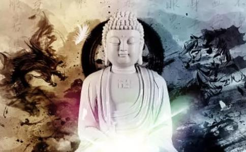

重复似乎是人生的某种本质，你越拼命想要摆脱这种无聊的重复，却越是循环往复，怎样也摆脱不了。人生的循环往复其实就好似佛家所说的因果。种什么样的因就结什么样的果，这些都是早已注定的，并非人力可以改变的。人生注定是重复的循环，即使过了很多时间，也不可能会逃脱这注定的命运和因果。所以我们改变不了因果也改变不了这循环，就只能克制自己，规范自己的行为，把所有的因果和重复都变成善意的。这样即使有因果报应的循环往复，也往往是好意的。
一位少女未婚却怀孕了，于是她去找在精舍中精修的佛。佛正在为弟子说法，这位怀孕的少女径直走到佛面前，直指着佛说道：“沙门！你害得我好苦啊！你让我怀孕，却恶意地离弃我，我到处找你都找不着，原来你却躲在这里逍遥享福，现在，你总算给我找着了，你说，你将要如何安置我呢？”
原来，这少女是由外道差遣而来，并未真正怀孕，她只是将脸盆绑在肚子上，伪装有孕在身，以此来毁谤佛，破坏佛的名誉。少女虽然很逼真地质问佛，但是后来还是被佛的弟子发现，揭穿了她的伎俩。
惊异中的弟子们看到原来是该少女的刻意诽谤才放下心来，但心中仍然升起了一个疑问，为何解脱的圣者如佛，仍会遭受此果报？因此舍利佛就代表诸弟子请示佛，是何因缘致使此女来毁谤佛？
佛告诉诸弟子说，很久以前，在一座王城中，有一位非常贤德的妇女，人们都称她为“善幻女”。她对修行者非常尊敬，时常予以供养，尤其常常供养两位法师，一位叫“无胜”，一位叫“常观”，无胜法师修行非常精进，德行也很高，因此颇受大家的敬重，至于常观法师，虽然是一个修行者，但世俗的习气仍很重。虽然善幻女每日都以相等的供养品来供养两位法师，但在态度上，免不了仍有一般人的分别心，她对常观法师的恭敬，就比不上对无胜法师的周到。
身受差别待遇的常观法师，因世俗习气甚重，无法体会平常心的道理，因此一股强烈的嫉妒之火油然而生，逢人便到处造谣说，善幻女一定和无胜法师有私通，虽然表面上是同样的供养品，但暗地里一定有分别，虽经劝说，但仍然不停止恶意毁谤造谣。
佛说到这里，停了一会，问诸弟子道：“你们知道那常观法师是谁吗？就是我的前身。因为曾经恶意毁谤有德的修行者，所以曾堕落地狱数千年，受猛火烧身之苦，我现在虽然已经成功解脱，但余殃未尽，所以仍然得受同样恶意的毁谤！”即使是一个解脱的圣者，但因往昔曾经恶意毁谤别人的业力，在经过了极其长远的时间后，终究还是回到自己的身上来，“毁谤者，人恒毁谤之。”因果的纤毫不爽，能不令我们警惕吗？
常观法师对无胜法师的诽谤是在前世，也许已经过了数千年，然而因果的循环还是报在了他的今生。人生其实是重复的循环，不论是前世还是今生，不论你什么时候种下的恶因，都可能随时报应在你身上。因果律可以说是宇宙间一种最佳的“道德公正律”，任何人都解脱不了这种因果的循环。
《西方合论》中曾经说：今生虽不偷盗，但所求不如意，即是盗业未尽。今生虽不邪淫，但值不随意眷属，即是淫业未尽。今生虽不谤法妄语，但言出人或疑信相半，即是谤法及妄语业未尽。于一切果中，察一切因。当知前生无恶不作，当忏悔。人多前世今生即是因果循环，即使你已经忘记，但是其因果还是会跟随你。所以人们应该随时都做善事，以抵消前世可能造下的孽。
佛家说因果报应是人生的循环。其实舍与得又何尝不是？不论是因果还是舍得都是循环的，有因必有果，有果必有因；有舍必有得，有得必有舍。这于人生中都是循环的。人之所以有痛苦，就是因为看不开，不懂得因果，所以肆意做坏事，不懂得舍得，所以什么都想要，结果什么也得不到。人总是在经历了很多磨难之后，才能够顿悟。到最后才懂得了因果，于是便开始行善。到最后才懂得了舍得，于是学会了舍，当你什么都舍得的时候，你才会拥有真正的快乐。这一切都是循环，如果你只想着得，却不舍的话，那么即使这一时你得到了，人生的循环也总有一天会带走你的这一切。
佛曰：万法皆空，因果不空。佛法的教学是行善，并且不断地重复教导。每个人都懂得这些道理，但是在行动的时候却难免会忘记，多次的重复可以时刻提醒人们佛家的因果关系，这样你就会懂得人生的因果都是循环的，今生孽来世还，前世孽今生还，只要你作恶，总是要有报的。这些是对一个人恶行的约束。当人真的能够体会到这些，感恩的心就会生起，善的念头就会生起，他也会愿意潜心向佛了。
所以人生在世，一定要修善因，这样循环往复一时一日，所得的也都是善果。如果你要是去造恶因，那么你可能一世不如一世，每一世都会得到恶果，这样生生世世的循环，总有一天也许你会下地狱，谁也救不了你。
能救自己的，除了自己之外，没有别人。佛虽然慈悲，但是一切的因果报应还在于自己，佛只是把方法教给人。只有向善之心的修行，才可以从根本上脱离苦难的重复循环。
感悟：
禅悟，必须靠你自己去发现、去追寻、去领会、去实践。光用嘴巴问或者只会用嘴巴说，你的思想或思维只是在那里“原地踏步”，无法领悟禅的真谛。 顿悟禅意，晶莹剔透的感悟，就是发现一个新观点或者视点，还原事物的本来面目，看清人生方向……禅的智慧为处在利欲纷争的尘世里，注入了一股除去烦恼的清泉，是当代最能福佑世人无尽的智慧宝藏之一。禅的精髓是当代人士提升智慧的非常有效最直截的途径。通过感悟禅宗智慧，人们可由事业的成功走向人生的成功、觉悟，且终生受用。